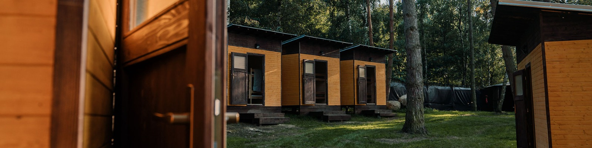

Zámek Orlík
Něco o Zamku
Orlík je hrad přestavěný na zámek u obce Orlík nad Vltavou v okrese Písek v Jihočeském kraji. Nachází se na skalním ostrohu nad Vltavou, jejíž údolí je zde zaplaveno vodou Orlické přehrady. Zámecký areál je chráněn jako kulturní památka.
Kdy můžete naštívit
Prohlídky zámku se konají od dubna do října, dle aktuální otevírací doby. Prohlídka probíhá v zámeckých pantoflích, děti do šesti let dostanou návleky.